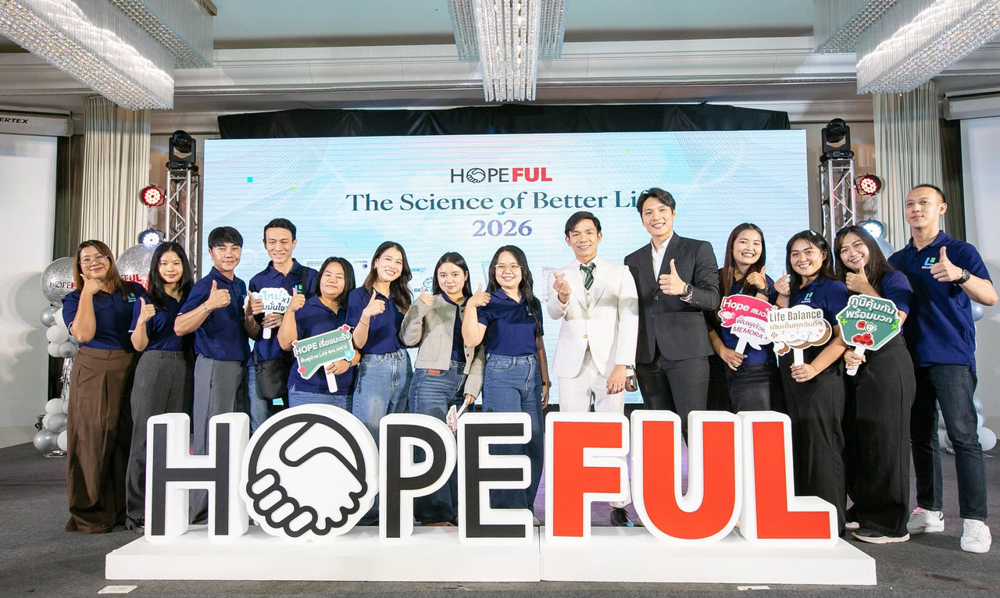
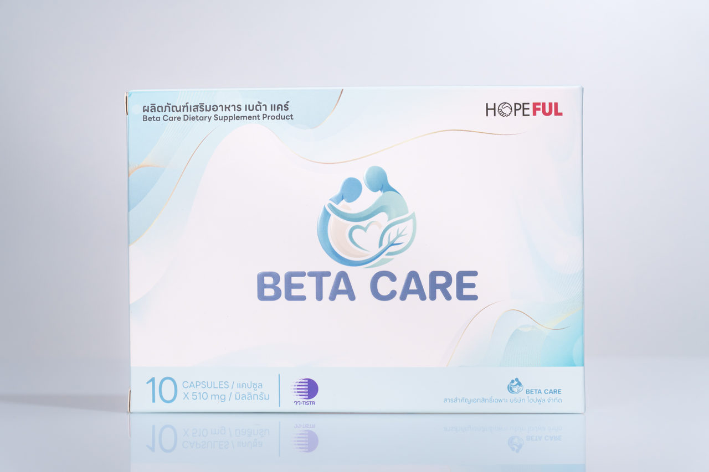
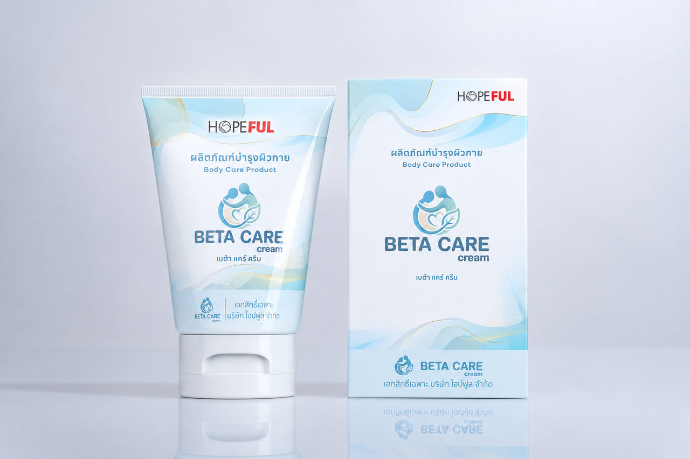
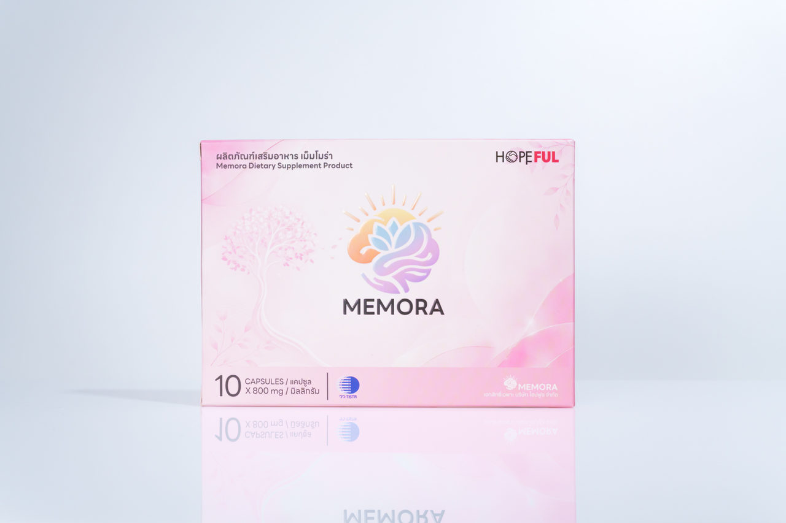
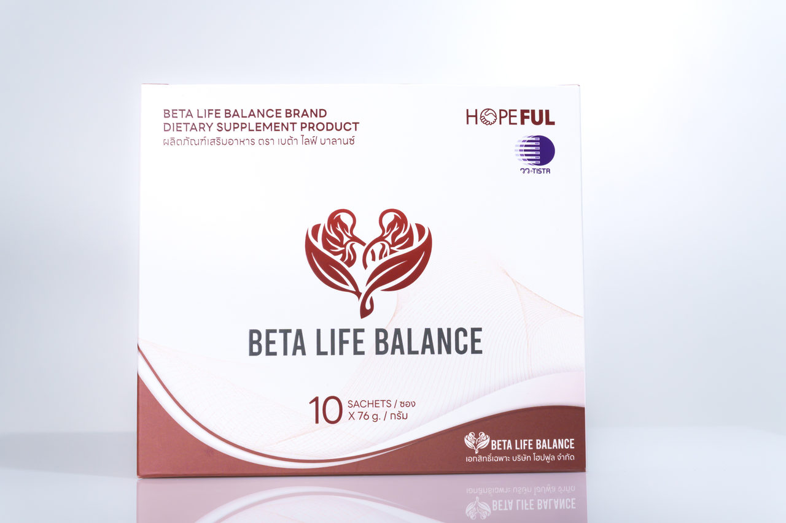
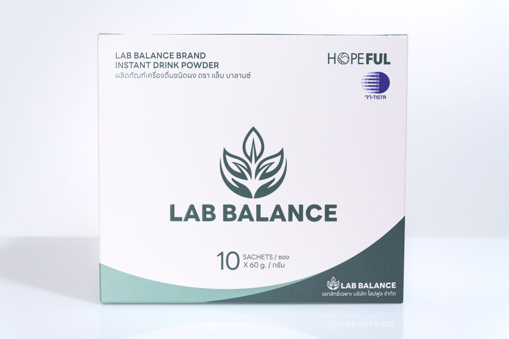
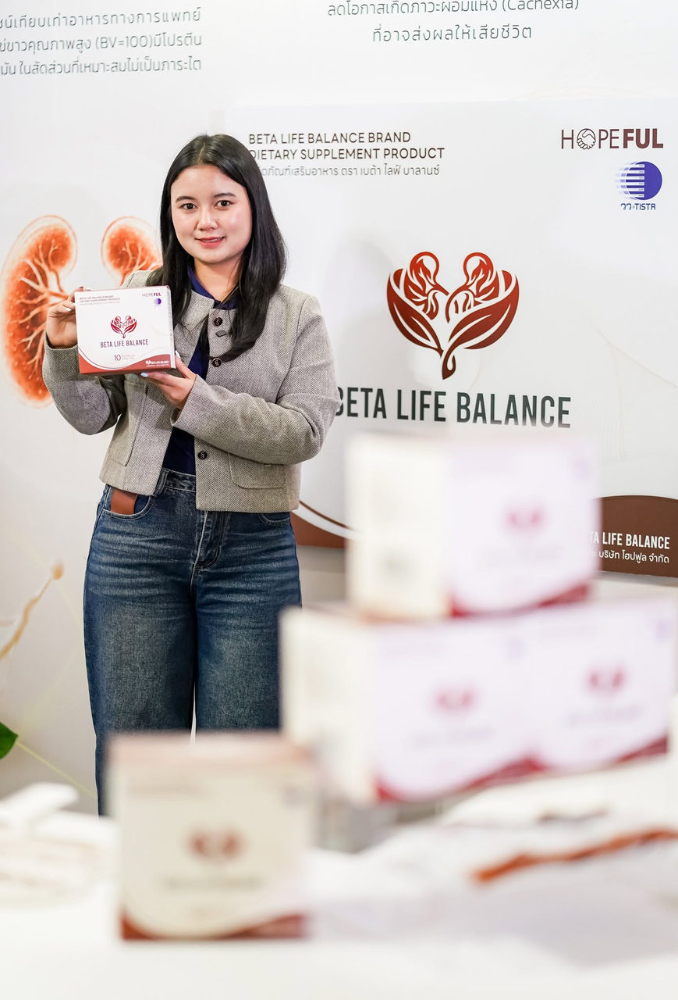

เปิด 5 ผลิตภัณฑ์ใหม่จาก HOPEFUL — Relife Solutions ร่วมงาน The Science of Better Life 2026
เผยแพร่ 2026-10-09 · โดย Hopeful Relife
ทีม Relife Solutions ร่วมงานเปิดตัว 5 ผลิตภัณฑ์ใหม่ของ HOPEFUL (23 ส.ค. 2569) ได้แก่ BETA CARE, BETA CARE CREAM, MEMORA, BETA LIFE BALANCE และ LAB BALANCE พร้อมฟังเบื้องหลังการพัฒนาจากนักวิจัย
เมื่อวันที่ 23 สิงหาคม 2569 ที่ผ่านมา ทีม Relife Solutions ได้ไปร่วมงานเปิดตัวผลิตภัณฑ์ใหม่ของ HOPEFUL ที่ Avana Bangkok Hotel & Convention Centre ในงาน "The Science of Better Life 2026"
สำหรับพวกเรา งานนี้เป็นอีกวันที่ได้ทั้งประสบการณ์และความรู้กลับมาเยอะมาก เพราะปกติเรามักเห็นสินค้าในมุมของการทำงาน การขาย หรือการทำการตลาดเป็นหลัก แต่ครั้งนี้ได้เข้าไปฟังเบื้องหลังของแต่ละผลิตภัณฑ์แบบใกล้ชิดจริง ๆ
ทำให้เห็นเลยว่า กว่าสินค้าหนึ่งตัวจะมาอยู่บนชั้นวางหรือในมือของลูกค้า มีทั้งแนวคิด งานวิจัย และรายละเอียดอีกมากมายอยู่ข้างหลัง

เปิดตัวพร้อมกัน! 5 ผลิตภัณฑ์ใหม่จาก HOPEFUL
แต่ละตัวมีจุดเด่นและถูกพัฒนามาเพื่อตอบโจทย์การดูแลสุขภาพคนละด้านกัน
1. BETA CARE — ดูแลผิวจากภายใน

ผลิตภัณฑ์เสริมอาหารที่เน้นการดูแลผิวจากภายใน มี Curcumin PHYTOSOME®, โพรไบโอติก 5 สายพันธุ์ และ สารสกัดจากแก่นตะวัน ที่พัฒนาร่วมกับ วว. — ดูรายละเอียด BETA CARE
2. BETA CARE CREAM — ดูแลผิวจากภายนอก

ผลิตภัณฑ์บำรุงผิวกาย เน้นการปลอบประโลมผิว ฟื้นบำรุง เติมความชุ่มชื้น และช่วยดูแลผิวให้แข็งแรงขึ้น — ดูรายละเอียด BETA CARE CREAM
3. MEMORA — สำหรับคนที่ใส่ใจสมองและความจำ

มีสารสกัด เห็ดหัวลิง รวมถึง พรมมิ และสารอาหารที่เกี่ยวข้องกับระบบประสาท — ดูรายละเอียด MEMORA
4. BETA LIFE BALANCE — โภชนาการสำหรับผู้ที่ต้องดูแลเรื่องไต

ออกแบบสูตรให้เหมาะกับการควบคุมสารอาหารบางชนิด เช่น โซเดียม ฟอสฟอรัส และโพแทสเซียม ผู้ที่มีปัญหาเรื่องไตควรปรึกษาแพทย์หรือนักกำหนดอาหารก่อนรับประทาน — ดูรายละเอียด BETA LIFE BALANCE
5. LAB BALANCE — ผงชงโภชนาการโปรตีนและพลังงานสูง

สำหรับคนที่ต้องการโปรตีนและพลังงานสูง มีทั้ง โปรตีนไข่ขาว กรดอะมิโน วิตามิน แร่ธาตุ และสารสกัดที่ผ่านการศึกษาและพัฒนามาอย่างจริงจัง — ดูรายละเอียด LAB BALANCE
มากกว่าความประทับใจ คือได้รู้จักสินค้าลึกกว่าที่เคย
ในงานมีทั้งนักวิจัยและผู้เชี่ยวชาญมาเล่าถึงที่มาของสินค้าแต่ละตัว ว่าพัฒนามาอย่างไร เลือกส่วนประกอบแบบไหน และมีแนวคิดอะไรอยู่เบื้องหลัง พอได้ฟังแบบนี้แล้วเราเข้าใจสินค้ามากขึ้นเยอะเลย จากที่เคยมองแค่ว่า "ตัวนี้ช่วยดูแลเรื่องอะไร" ก็เริ่มเห็นภาพว่าทำไมถึงออกแบบผลิตภัณฑ์มาแบบนี้ และแต่ละสูตรตั้งใจทำมาเพื่อใคร
สำหรับทีม Relife เรื่องนี้สำคัญมาก เพราะก่อนจะสื่อสารอะไรกับลูกค้า เราเองก็ควรเข้าใจสิ่งนั้นก่อน ยิ่งเข้าใจสินค้ามากเท่าไร เวลาทำคอนเทนต์ ทำการตลาด หรือพูดคุยกับลูกค้า ก็ยิ่งเล่าได้ชัดและเป็นธรรมชาติมากขึ้น
ดีใจที่ Relife ได้เป็นส่วนหนึ่งของงานนี้

สิ่งหนึ่งที่รู้สึกได้ชัดจากงาน คือความตั้งใจของ HOPEFUL ในการพัฒนาผลิตภัณฑ์ใหม่ ๆ ให้ตอบโจทย์คนที่มีความต้องการด้านสุขภาพแตกต่างกัน และในฐานะที่ Relife Solutions ได้ช่วยดูแลและส่งต่อผลิตภัณฑ์ของแบรนด์ เราก็ดีใจที่ได้เห็นตั้งแต่เบื้องหลัง ได้เข้าใจแนวคิดของแบรนด์ และได้เรียนรู้ไปพร้อม ๆ กัน
สำหรับเรา การทำงานกับแบรนด์ไม่ได้จบแค่การขายสินค้า แต่คือการรู้จักสินค้า เข้าใจสิ่งที่แบรนด์อยากส่งต่อ และช่วยให้ข้อมูลเหล่านั้นไปถึงลูกค้าในแบบที่เข้าใจง่ายที่สุด
อีกหนึ่งรูปแบบของการเติบโตไปพร้อมกัน
"บางครั้งการเรียนรู้ไม่ได้เกิดขึ้นแค่ตอนนั่งทำงานอยู่หน้าคอม" แต่อาจเกิดจากการได้ออกไปเจอคนใหม่ ๆ ได้ฟังผู้เชี่ยวชาญ ได้เห็นวิธีคิดของแบรนด์ หรือได้รู้ว่าสิ่งที่เราเห็นทุกวันมีเรื่องราวอยู่เบื้องหลังมากกว่าที่คิด
นี่คืออีกสิ่งที่พวกเราชอบในการทำงานที่ Relife Solutions เพราะนอกจากได้ทำงานจริงแล้ว ยังได้ออกไปเรียนรู้และเก็บประสบการณ์ใหม่ ๆ กลับมาพัฒนาตัวเองอยู่เสมอ
หมายเหตุ: ผลิตภัณฑ์เสริมอาหารไม่ใช่ยา ไม่มีผลในการป้องกันหรือรักษาโรค ผู้ที่มีโรคประจำตัว ใช้ยาเป็นประจำ หรืออยู่ระหว่างการรักษา ควรปรึกษาแพทย์ก่อนรับประทาน
บทความนี้มีวัตถุประสงค์เพื่อให้ความรู้ทั่วไปเท่านั้น ไม่ใช่คำแนะนำทางการแพทย์ หากมีข้อสงสัยเกี่ยวกับสุขภาพ ควรปรึกษาแพทย์หรือเภสัชกร